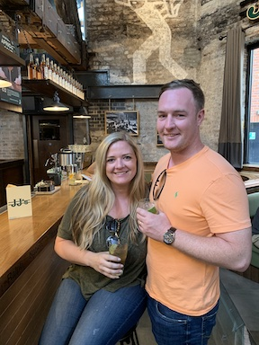

Reykjavík, Iceland

The first leg of our two week honeymoon started in Iceland. We flew out of Philadelphia the day after we got married and spent 3 days touring this beautiful country. To this day, this may have been my favorite part of our honeymoon and one country that I would definetly like to visit again.
Dublin, Ireland
After three nights in Iceland, we spent three days in Dublin, Ireland. Although there were plenty of sights to see, we spent most of them at breweries and bars.
Venice, Italy

After many pints over three nights in Ireland, we began our eight night tour of Italy. We spent the first two nights in Venice, and yes we spent €100 to ride in a gondola for less than thirty minutes.
Florence, Italy

Our next stop was two nights in Florence. By the time we got here, Italy was in the middle of a heat wave and we spent an embarrasing amount of time at the Hard Rock Cafe in search of air conditioning.
Capri, Italy

Our second to last stop was in Capri. This island was my favorite spot in Italy. Beautiful weather, great food, and breathtaking views.
Rome, Italy

Our final stop on our honeymoon was in Rome. Rome was very crowded with tourists and was my least favorite spot on the trip. By this time we were tired of traveling and ready to go home. This was one of the few pictures I could find in Rome where we were both smiling, probably because we were eating. We made it two weeks traveling the world!